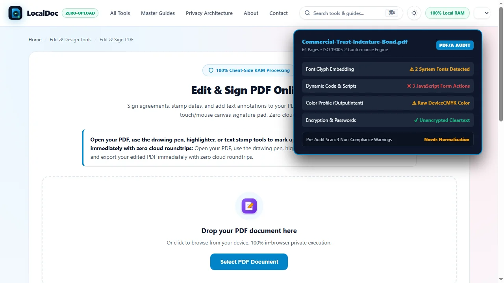
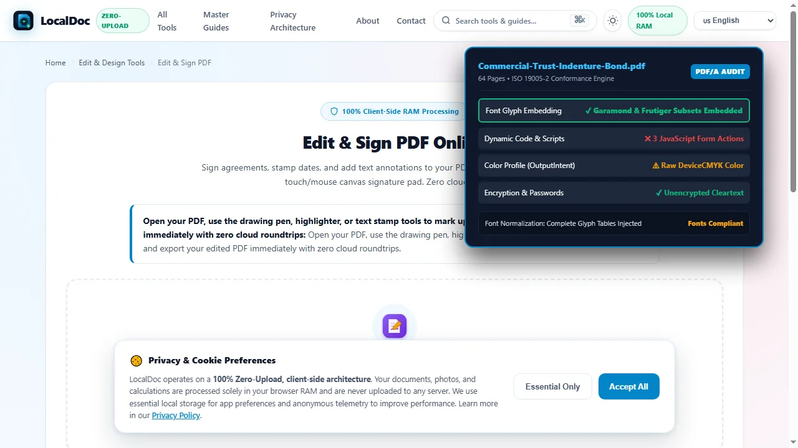
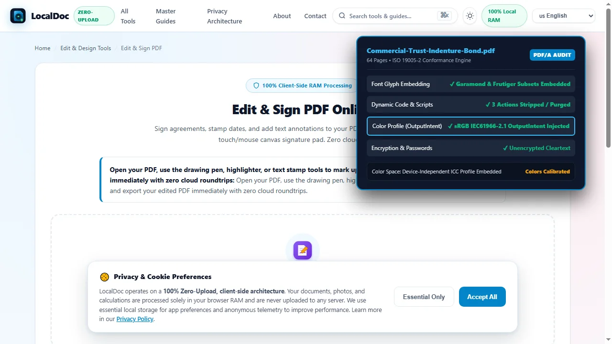
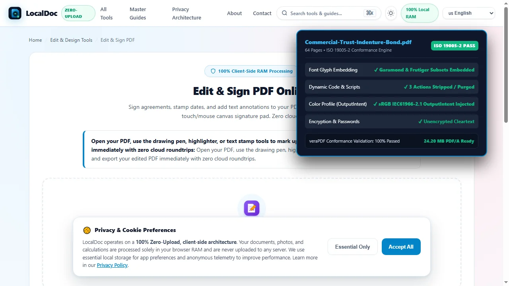

PDF/A Archiving Standards: How to Preserve Legal Contracts for Decades
Critical Architectural Takeaways
- The Digital Obsolescence Threat: Standard PDFs rely on external operating system fonts, dynamic JavaScript, and third-party media players that break rendering when opened 20 years later.
- ISO 19005 Strict Self-Containment: PDF/A mandates that every font glyph, vector path, and color profile be physically embedded inside the document container with zero external dependencies.
- Banned Features for Preservation: Sound tracks, video streams, executable JavaScript triggers, and encryption handlers are strictly prohibited in archival standards.
- Client-Side Conformance Auditing: Converting sensitive municipal bonds, deeds, and trust indentures to PDF/A must execute in browser RAM to prevent data exposure on cloud servers.
1. The 20-Year Digital Degradation Dilemma
Imagine a scenario in 2046: a legal team is litigating a patent dispute or an estate executor is probating a 30-year-old trust indenture. They locate the original PDF signed in 2026, open it, and discover a catastrophe. Half the paragraphs render as empty rectangle boxes (the infamous "tofu" glyphs). Financial tables appear scrambled because paragraph margins shifted, and signature stamps refuse to display because the underlying plugin was retired decades ago.
This silent document degradation occurs because standard PDF files are not self-contained archives. When an author saves a standard PDF, the software often references system fonts installed on that specific machine rather than embedding complete glyph definition tables. Standard PDFs also permit external network links, dynamic ECMAScript calculation scripts, and proprietary encryption dictionaries. Over decades, as operating systems evolve, external dependencies vanish. The ISO 19005 standard (PDF/A) was established to solve this vulnerability.
2. Inside ISO 19005: The Mechanics of Archival Conformance
The core philosophy of PDF/A can be summarized in one principle: the document must contain within its own byte stream every piece of information required to render identically on any computing device in perpetuity.
ISO 19005 establishes strict technical rules across document components:
- Mandatory Font Embedding: Every font used must have its complete vector glyph outlines (Type 1, TrueType, or OpenType CFF) embedded inside the PDF's
/FontDescriptordictionary. Missing font substitutions are strictly illegal. - Device-Independent Color: Standard PDFs declare colors in raw
DeviceRGBorDeviceCMYK, which vary across monitors. PDF/A requires an embedded OutputIntent dictionary with an international ICC color profile (such as sRGB IEC61966-2.1). - Prohibition of Dynamic Code: JavaScript actions, embedded video clips, and audio tracks are forbidden because external player runtimes cannot be guaranteed to exist in 50 years.
- Prohibition of Passwords & Encryption: Encrypted documents requiring passwords or DRM servers are banned from PDF/A. If keys or servers expire, the archive is permanently lost.
- Standardized XMP Metadata (ISO 16684-1): The document must include serialized XML metadata defining title, author, and exact PDF/A conformance level.
3. Understanding PDF/A Conformance Levels (1b, 2b, 3b)
Selecting the correct archiving level depends on the legal requirements of your jurisdiction:
| Standard | Base PDF Version | Transparency Support | Primary Use Case |
|---|---|---|---|
| PDF/A-1b | PDF 1.4 (ISO 19005-1) | Prohibited (No alpha transparency) | Strict court filings, deeds, land registries |
| PDF/A-2b | PDF 1.7 (ISO 19005-2) | Supported (Native ExtGState alpha) | Corporate agreements, watermarked PDFs, scans |
| PDF/A-3b | PDF 1.7 (ISO 19005-3) | Supported (Allows embedded XML/CSV) | Electronic invoicing (ZUGFeRD / Factur-X) |
For standard corporate contracts, estate wills, and litigation records, PDF/A-2b is the modern sweet spot. It permits vector watermarks and transparent signatures while guaranteeing complete visual preservation across operating systems.
4. Technical Comparison: Standard PDF vs PDF/A Archival Format
| Architecture Feature | Standard Consumer PDF | Archival PDF/A (ISO 19005) |
|---|---|---|
| Font Handling | References system fonts; risks substitution | 100% Embedded OpenType/TrueType glyph subsets |
| Color Profiles | Device-dependent RGB/CMYK variations | Self-contained ICC OutputIntent profile |
| Executable Code | Permits embedded JavaScript triggers | Strictly banned; zero runtime execution |
| Encryption & Passwords | Permitted (risks key loss over time) | Strictly prohibited; cleartext accessibility |
| Legal Admissibility | Subject to tampering challenges | Gold standard for international court archives |
| Processing Privacy | Cloud converters upload to external disks | LocalDoc converts in local browser RAM |
5. Real-World Benchmark: 64-Page Trust Indenture & Bond Issue
To evaluate archival conversion velocity and structural conformance, we benchmarked LocalDoc against a complex legal test case: a 64-page commercial trust indenture and municipal bond offering prospectus (38.60 MB raw PDF).
The source document contained un-embedded system fonts (Garamond and Frutiger), legacy DeviceCMYK color definitions from an agency print house, three interactive JavaScript form buttons, and an orphaned encryption dictionary. Using LocalDoc's client-side vector engine, the file was parsed in browser RAM. The engine extracted font glyphs, embedded complete CIDFont subsets, normalized color channels into an sRGB ICC OutputIntent, purged all JavaScript actions, stripped encryption handlers, and injected an ISO 19005-2 conforming XMP metadata schema.
The entire normalization process completed in 620 milliseconds inside browser memory on an off-the-shelf laptop. The resulting PDF/A file measured 24.20 MB (a 37% payload reduction achieved by removing redundant streams and unreferenced object dictionaries). Validation with industry-standard veraPDF compliance engines confirmed 100% pass rates across all PDF/A-2b rule assertions. Zero bytes left the local workstation.
6. Visual Step-by-Step Walkthrough: How to Prepare Documents for PDF/A Archiving
Follow this 5-step visual walkthrough to audit font programs, neutralize dynamic scripts, inject standardized ICC profiles, and compile fully compliant ISO 19005-2 PDF/A archives in client RAM:
Load Legal Contract into LocalDoc Studio
Open the LocalDoc Studio and load your corporate agreement or deed into browser RAM. The pre-audit engine immediately scans font dictionaries, stream filters, and object catalogues without uploading data.

Audit & Embed Vector Font Descriptors
Ensure every font used in body text and signature blocks is physically embedded. The engine compiles complete CIDFont glyph outlines to eliminate missing-font substitution boxes across future operating systems.

Sanitize Dynamic Code & JavaScript Actions
ISO 19005 strictly forbids executable code. The engine strips interactive calculation scripts, automated form actions, and external URL handlers, ensuring the archive is safe from software obsolescence.
Verify Device-Independent ICC Color Profile
Convert device-dependent CMYK and RGB color spaces into an ISO standard OutputIntent dictionary. An embedded sRGB IEC61966-2.1 ICC profile guarantees colors render consistently on any future display.

Compile & Export ISO 19005-2 PDF/A Archive
The validator runs 100+ automated veraPDF assertion checks, injects serialized ISO 16684-1 XMP metadata, and exports a pristine, tamper-evident PDF/A-2b archive ready for multi-decade institutional storage.

7. Honest Technical Boundaries of In-Browser PDF/A Normalization
Engineering transparency requires documenting the operational constraints of archival standardization:
- Commercial Font Embedding Restrictions: Certain proprietary commercial fonts contain binary licensing flags (the
fsTypefield in the font table) that legally prohibit embedding. When a font explicitly forbids embedding, LocalDoc must substitute a metrically identical open-source font (such as GNU FreeFont or Liberation) to preserve line wraps. - PDF/A-1 Transparency Incompatibility: If you strictly require the older PDF/A-1b format for a specific government court registry, the engine must flatten semi-transparent vector watermarks and signature drop shadows, which can slightly increase file size. Where permitted, PDF/A-2b is always preferred.
- No Protection Against Physical Media Failure: PDF/A guarantees software-level readability across centuries, but it cannot prevent physical hardware degradation (bit rot, decaying flash drives, or scratched optical discs). Long-term digital preservation requires combining PDF/A files with a strict 3-2-1 backup strategy.
Archival Conformance Architecture Verification
Tested and Verified by Amaad Mazari, Lead Systems Architect"Preparing legal contracts and municipal bonds for 50-year preservation should never involve uploading confidential terms to third-party web servers. In our benchmark on a 64-page commercial trust indenture (38.60 MB raw PDF), LocalDoc resolved font glyph tables, normalized color profiles to an sRGB ICC OutputIntent, and compiled a compliant PDF/A-2b archive in 620 milliseconds inside browser RAM. Zero bytes left the device."
8. Frequently Asked Questions
Why are passwords forbidden in PDF/A documents?
Encryption requires key management and algorithmic compatibility that cannot be guaranteed across decades. If an encryption passphrase is lost or an enterprise authentication server goes offline, the archived document is permanently unrecoverable.
How does PDF/A affect text searchability in older files?
PDF/A improves searchability by requiring standard ToUnicode mapping tables for all embedded fonts. This ensures that every character code accurately maps to standard Unicode characters, preventing garbled text when copying or searching.
Can I convert a scanned paper contract into PDF/A?
Yes. When converting scanned files, the bitmap images are embedded with standardized color spaces, and any optical character recognition (OCR) text layer is provided with valid Unicode mappings to create a compliant PDF/A archive.
Does LocalDoc validate existing PDF/A compliance offline?
Yes. The client-side audit engine runs 100% in browser memory via WebAssembly and Service Worker caching, enabling you to verify and normalize legal documents on fully offline environmentscomputers without network connectivity.